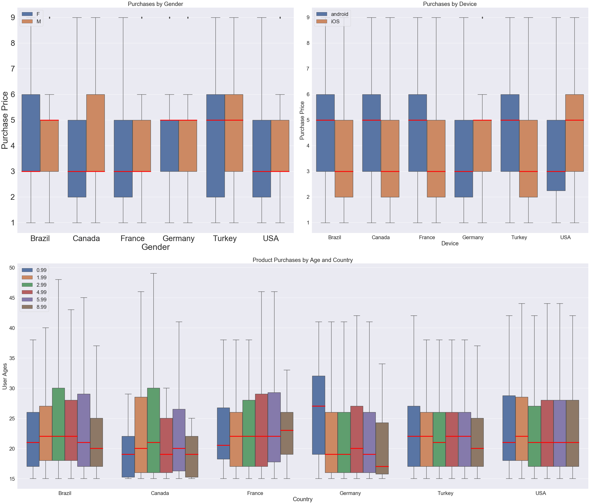
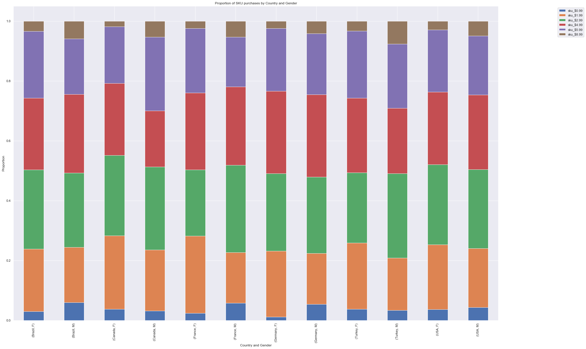
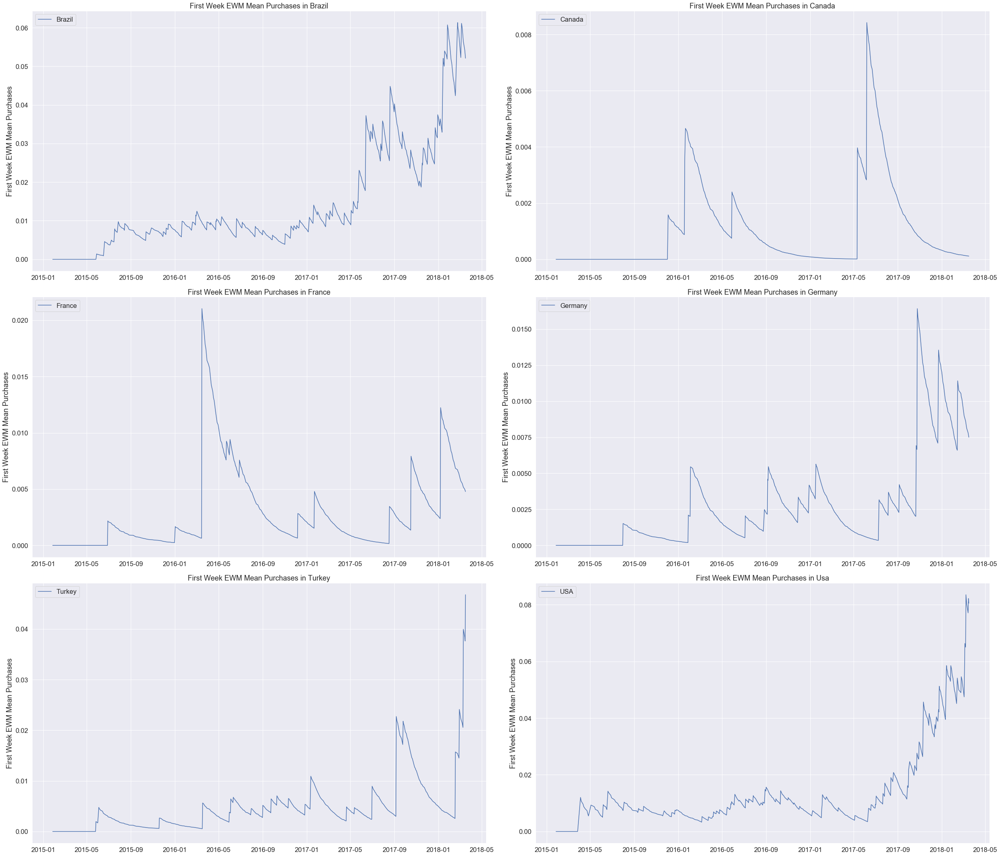
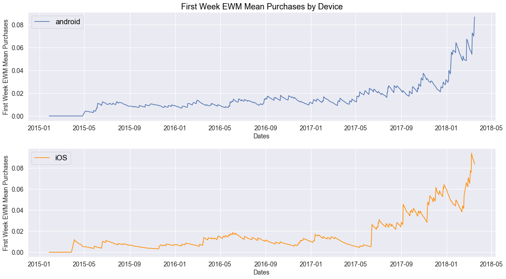
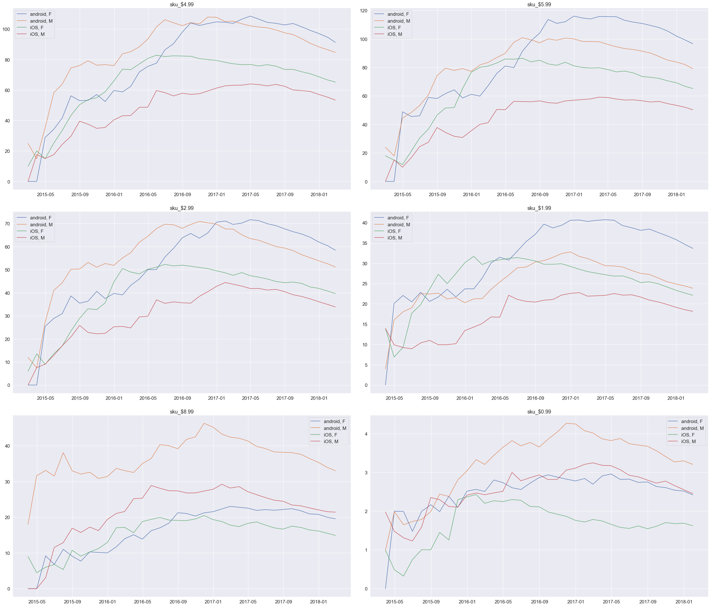

Background Info
Key Performance Indicators (KPIs):
Are metrics that businesses use to measure the status of a specific goals. KPis are used to evaluate
how effective a company is achieving its key business objectives. KPI's are bifurcated into "High
KPIs", which evaluate overall performance, and "Low KPIs", which evaluate departmental processes. A
combination of factors influence how KPIs are defined, but in general, KPIs have a specific outcome
that can be measured, are attainable, relevant, and has a time-frame.
- Common KPIs include:
- Revenue
- Customer Service
- Marketing
- Sales
- Revenue
- Employment Statistics
Why is this important?
Key performance indicators provide business with metrics that they can use to evaluate the health of their business, and operation. Knowing how to analyze baseline metrics for a business enables you to create a benchmark, and develop actionable KPIs to help the business grow.
This project
In this post, we will a evaluate the data for a new app focused on health. The goal then is to a) understanding their user demographics, b) their conversion rates, c) their purchase patters, and d) revenue trends. This analysis in turn, may be used to develop actionable key performance indicators that may help this app grow.
Resources & Citations
Research Objectives
Methods
Data.
The data was accessed from
Analysis
The programming language Python was used in this project. Data was loaded and manipulated using the pandas library. The matplotlib and seaborn libraries were used to visualize data. The scipy and statsmodels.api libraries were used in the statistical analysis. Normality was evaluated using a qqplot, while the Barlette's test was used to test for equal variance. A Welch's t-test for two independent samples was used to determine statistical differences between groups that did not have equal variance.
Results:
Most users are in their early 20s, live in either the USA or Brazil, are female, and use
an android devices.
Characterizing the business user demographics is essential at understanding
baseline KPIs, but also in
developing new specific, measurable, achievable, relevant, and time-bound KPIs. 1322 unique users were
filtered from the customers dataframe. USA had the largest number of users at 539, while Canada has
the smallest number of users (Figure 1 top left panel). The mean age of users was 24, and an analysis
of the age distribution confirms that this demographic is primarily in their early twenties (skewness
= 1.690, Figure 1 top right panel). Most of these users were female (Figure 1, bottom left panel), and
60% of all users accessed the app via an android devices (Figure 1 bottom right panel).
{kind=link}
Figure 1.User Demographic by country (top left panel), age (top right panel), gender (bottom left panel), and device type (bottom right panel).
No statistically significant difference in the mean ages of users when taking gender,
device type, and country
To further segment the users of this app, and determine if there were any age
differences when looking
at gender, device type, and country, a Mann-Whitney rank test or the Kruskal-Wallis H-test for
independent samples was conducted. The results from the Mann-Whitney test for gender (pValue = 0.1135)
and device (pValue = 0.0656) suggest no statistically significant difference in the central ages
between these groups. The result from the Kruskal-Wallis H-test also suggest that there is no evidence
that the ages of users in different countries was significantly different. These findings are
consistent with a visual analysis of this data (Figure 2).
In terms of absolute counts, there were more female users than male users, and
there were more females
using both android and iOS devices than men. When comparing the age of male and female users by
country, the mean age of men was higher in all countries but France (Figure 3 bottom panel, Table
1).
Finally, to determine what device types are used to access this app, user
counts by device and country was analyzed (Figure 4). The results are consistent with Figure 1, Figure
2, and and Figure 3, although in this figure, we see that Android users are the majority for all
countries. Suggesting and that any issues with android updates could have an impact on a majority of
the app users.
Bottom line:
Taken together, women users outnumber male users, and although the mean ages
of men are generally
older for most countries in this dataset, this is not significantly significant.
Potential KPIs:
Increase male users.
{kind=link}
Figure 2. Segmentation of users by age and gender (top left panel), age and device type (top right panel), and age and country (bottom panel).
{kind=link}
Figure 3. Absolute count of female and male users by country, and device type, and the distribution of ages by gender and country.
Table 1. Mean age of male and female users by country. Table
title
{kind=link}
{kind=link}
Figure 4. Absolute count of users by device type, and country.
Although, the US has the highest number of users, and total purchases (number and sum),
other countries have users that purchase more (number and median price).
To determine the baseline key performance indicator for purchase prices users made
on this app by demographic, an analysis of their purchasing behavior was conducted.
An analysis of the purchases users made by country, reveals that the USA had
the highest number of total purchases, and the highest total amount paid, while Canada has the lowest
of these two metrics. Although the US ranked the highest in these metrics, Germany and Canada had the
highest average number of purchases by user (7.26, and 7.25 respectively), while Turkey had the
highest mean and median purchase price paid by their users (Figure 5 top left panel, and Table 2).
When comparing the purchase price users paid by gender, we see that the median price paid by men is
higher than women (Figure 5 top right panel), although a Mann-Whitney rank test confirms that this
different is not statistically significant (U-Statistic 9.9e5, p-value=0.088).
To determine if there was a difference in the median price paid by users on
android or IOS confirms no difference (Figure 5 bottom left panel), and when evaluating the age of
users on the types of products they purchase by median price, also reveals no meaningful difference
(Figure 5, bottom right panel).
The next task was to determine if there were any trends in purchase price made
by users in different countries, and taking their gender and device type into consideration. A box
plot was used to evaluate the distribution of prices paid, and when evaluating this feature according
to gender and country, we can see that the only country that had a difference in median purchase price
by gender was in Brazil (Figure 6, top left panel). As for device type, we see that in all countries
but the US and Germany, android users made purchases at higher prices than the iOSC users (Figure 6,
top right panel).
Finally, a boxplot was used to determine if there were product preferences by
the age and country of the user. There are six products available, and they are represented by their
price (0.99, 1.99, 2.99, 4.99, 5.99, and 8.99). In this subplot, we can see that in Brazil, the median
age for purchases of these 6 products are between 20-23 yrs of age. In Canada, the 6 products are
purchased by users between 18 - 22 yrs of age. In France, the median age of users seems to trend with
the price of the product, although this does not seem to be significantly significant. The inverse
seems true in German, where the oldest users (median age), seem to prefer the cheapest product (0.99),
while the youngest users seem to purchase the most expensive product (8.99). Finally, Turkey and the
US seem to have users that purchase all products, and whose media age are between 20-22 yrs of age. In
aggregate, there is no evidence to suggest a trend exist between the user's age, the product price,
and the user's country. All products purchased seem to be made by users in their early twenties,
irrespective of the country, and this is further supported by the data visualized in Figure 1 (top
right panel).
Bottom line:
Taken together, although the US has the highest number of unique users, and
the highest amount paid, US users spend less, while countries such as Brazil, Turkey, and Germany,
have users that spend more per transaction (Figure 5, top left panel). Moreover,there is no evidence
that the median price paid varies by gender, device type, or age of user.
Potential KPIs:
Increase the purchase price paid by users in the USA as they are the country
with the highest volume of purchases, but spend less per transaction than other countries.
Increase the number of users in Canada, and Germany, as they make more transaction by user.
Table 2. Descriptive statistics for purchases made by users by
country.
{kind=link}
{kind=link}
Figure 5. Purchase price metrics by country, gender, device type, and age of user. Purchase price by country (top left panel), purchase price by gender (top right panel), purchase price by device (bottom left panel), age of users by product price (bottom right panel).
{kind=link}
Figure 6. Purchase price metrics by country and gender (top left panel), country and device type (top right panel), and age of users, country, and product (bottom left panel).
The most popular products, by ranking are: sku_$2.99, sku_$3.99, sku_$4.99, and
sku_$1.99.
In Figure 6, we began to explore product preferences according to age and
country. This analysis revealed no significant trend, although it's conceivable that by further
stratifying purchasing data by gender and device type might reveal user preferences. In Figure 7, we
see that when we evaluate the number of purchases of the various products by gender, and men tend to
purchase more of the $8.99 product than women, but in general, the most popular products are those
that cost 1.99, 2.99, 4.99, and 5.99. This product purchase pattern was also the same by device type,
although android users purchase more of each product than iOS users, although this is can be explained
by the higher number of android users than iOSC users (Figure 3, top right panel). When we extend this
comparison to country of users, we see the same pattern.
When we evaluate the proportion of products purchased by user gender, and
country, the most striking difference is that men from every country proportionally, purchase more of
the $8.99 product than women (Figure 8).
Bottom line:
The most popular products, by ranking are: sku_$2.99, sku_$3.99, sku_$4.99,
and sku_$1.99. This trend seems to hold when comparing gender, device type, and country of users. The
only exception is that male users tend to purchase more of the products that cost 0.99 and 8.99 by
count and proportion.
Potential KPIs:
Increase the proportion of users that purchase the higher priced product
sku_$8.99.
{kind=link}
Figure 7. Purchase price metrics by country, gender, device type, and age of user.
{kind=link}
Figure 8. Proportion of products purchased by user's country and gender.
Male and iOS users have a higher conversion rate than women, and andoird users
(respectively).
Another important baseline key performance metric, is the rate at which users
convert into paying users. Two time frames were analyzed in this study, the conversion rate seven and
fourteen days post registration. The first week conversion rate for all users is 15.1%, and 23.5% for
the first two weeks (Table 3). When we then compare the conversion rates for men and women, we see
that men have higher conversion rate at 7 days (week 1) and 14 days (week 2) than women (Table 4).
This result suggest that although women outnumber men, more men make purchases in their first and
second week post registration then women. When we then evaluate the conversion rates by device type,
we see that iOS users make more purchases within their first and second week, than android users
(Table 5). When we then evaluate conversion rates by the user gender and device type, we see that
female android users make more purchases their first week than male android users, but male android
users that purchase doubles in the second week post registration. When we compare iOS users by gender,
we see that men have a higher conversion rate than women in the first week, but women eventually
convert at a higher number than men in the second week . We also see that female iOS users have higher
conversion rates than female android users, and that although male iOS users convert at higher levels
in the first week than android users, the android users eventually out-convert iOS users in the second
week (Table 6). Finally, we see that when we compare all cohorts, male android users have the highest
conversion rate at the 2 week period, followed by female iOS users.
Bottom line:
Men and iOS users have higher conversion rates than women, and android
devices, respectively.
Potential KPIs:
Increase conversion rates for female android users since females and android
users are the largest user categories, this would increase revenue (Figure 1, bottom left panel).
Table 3. User conversion rates for 1 and 2 weeks post
registration.
{kind=link}
Table 4. Gender cohort conversion rates for 1 and 2 weeks post
registration.
{kind=link}
Table 5. One and two week conversion rates by device types.
{kind=link}
Table 6. One and two week conversion rates by gender, and
device types.
{kind=link}
{kind=link}
Figure 9. One and two week cohort conversion rates.
The 1st week rolling average purchase users make have increased, and in particular, in
countries such as Brazil, Germany, and Turkey.
The conversion rate is one metric that measures purchasing behavior. Another
metric is the running average of purchases users make during their first week post registration. This
is taking the average of purchases over time. To this end, an exponential moving average (EWM) was
used, because it places more weight on recent purchasing behavior, and better captures trends in a
faster way than using simple or cumulative moving averages. Using this method, we see that users
typically purchase between 0.1 to 0.25, and this seems seasonal (Figure 10). We then wanted to
evaluate the 1st week EWM purchases by country, and see that of the six countries, 1st week EWM mean
purchases appears to go up for Brazil, USD, and Turkey (Figure 11). When we then evaluate this metric
by device type, we see that an increase from May-2017 until the end of this dataset.
Bottom line:
The exponential weighted moving mean purchase for the first week for all
users seem to increase relative to the start of this dataset, and that these purchases in particular
seem to have increased in countries such as Brazil, USA, and Turkey.
{kind=link}
Figure 10. First week EWM mean purchases.
{kind=link}
Figure 11. First week EWM mean purchases by country.
{kind=link}
Figure 12. First week EWM mean purchases by device.
Revenue has increased for all products over reporting period.
So far, we've explored baseline conversion rates and purchase metrics for the
first two weeks post user registration. The next step is to evaluate revenue generated over a longer
reporting period, for all transactions, by product, and by cohort. When we evaluate the rolling 28 day
average revenue for all transactions, we see growth (Figure 13), and a good proportion of this revenue
comes from sales of sku_$4.99 and sku_$5.99 (Table 7). Moreover, we see that when we evaluate the
rolling exponential weighted moving mean revenue for each product type, we see that they each have
also increased overtime (Figure 14). To determine which cohorts may be involved in this growth, we see
that male and female android user provide higher revenue for all products except sku_$8.99 and
sku$_0.99, where male iOS users provide greater revenue than female android users.
Bottom line:
Revenue has grown over this reporting period, with all products showing an
increase in revenue, with android users serving as the largest cohort responsible for this growth.

Figure 13. Rolling average revenue.
Table 7. Revenue by product.
{kind=link}
{kind=link}
Figure 14. Rolling average revenue by product.
{kind=link}
Figure 15. Average EWM revenue by cohort.
Executive Summary.
In this post, we explored a small sampling of a data ecosystem from a new app company that is interested in a) understanding their user demographics, b) their conversion rates, c) their purchase patters, and d) revenue trends. This analysis in turn, would be used to develop actionable key performance indicators. From this analysis, we were able to observed:
- Female users outnumber male users in absolute number, and in each country
- Android users outnumber iOS users in absolute number, and in each country
- Most users are in the US, and Brazil
- Brazil, Germany, and Turkey users purchase products at higher price than Canda, France, and the US
- Male users pay higher purchase prices than female users
- Male convert (paying users) at higher rates than females within the first and second week post registration
- iOS users have higher conversion (paying users) rates than android users
- The 1st week purchase rate for customers has increased in the last year of this dataset
- Overall revenue has increased year over year for this company.
- Mid priced products are the majority of items sold.
- A higher proportion of revenue is obtained from android users.
With this information, we can propose the following KPIs:
- Increase the number of male users
- Increase the 1st week conversion rates for female users (since they account for a larger number of users for this app)
- Increase the number of users in countries that buy higher priced items (Brazil, Germany, and Turkey.
These are just a few potential KPIs, naturally, experimental units, and sensitivity tests must be conducted to determine the target lift, and have a metric to compare after a KPI camping end.